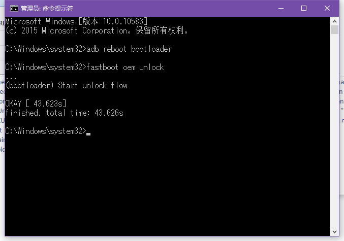
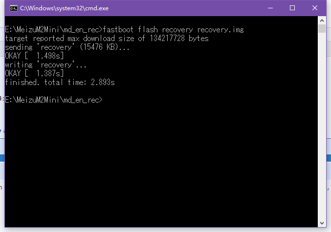

魅族魅蓝2解锁bootloader并刷入AOSP ROM
俄罗斯论坛4pda的一些大神成功的解锁了bootloader，我把教程翻译成了英文并完成了刷机，记录如下。
说明
- 本教程需要一定计算机操作基础知识。
- 文章中提供的资源均来自Google Drive文件分享。
原出处
- 解锁bootloader：http://4pda.ru/forum/index.php?showtopic=683361&st=5300#entry45261414
- 第三方recovery.img下载：http://4pda.ru/forum/index.php?showtopic=683361&st=5280#entry45259035
0. 前提
- 手机已经获取root权限。
- 数据必须备份。
1. 解锁bootloader
- 安装手机的驱动（在Windows10下直接插入手机就会自动安装），下载adb工具，将adb.exe加入到环境变量。
- 下载脚本unlock_bootloader.sh并拷贝到手机里（如内置存储的根目录）。
- 下载Terminal 1.0.70和BusyBox + Free.ver.33.build.183并安装。
- 运行BusyBox并授权root权限，点击“Install System”。
- 安装完成并重启手机之后，打开Terminal，输入
su提权，授权root权限后进入到保存unlock_bootloader.sh的目录，输入sh unlock_bootloader.sh运行脚本。 - 运行成功之后，打开Windows的命令行工具，将手机连接电脑并打开USB调试，在命令行中输入
adb reboot bootloader。 - 手机重启进入bootloader模式之后在命令行中输入
fastboot oem unlock进行解锁，手机会提示你继续操作将失去保修，按音量+键确定。
 - 完成后手机会卡死而命令行中有成功信息，此时长按手机电源键强制重启，一旦显示出MEIZU的字样时立刻同时按住
电源键和音量+键直到进入魅族原生Recovery。 - 进入之后勾选“清除数据”之后选择“执行”，数据清除后选择“重启”，这个操作相当于重置系统，手机会重启并显示魅族小气球，这个动画将会持续10-20分钟，请耐心等待。
2. 刷入第三方Recovery
- 进入系统之后确认root权限并重新启用USB调试，Windows中重新打开命令行并输入
adb reboot bootloader，手机重启并再次进入bootloader模式。 - 俄罗斯论坛大神提供了多个Recovery，我在这里选的是英文版的Materialised主题的Recovery。
- 下载Recovery到计算机上后命令行进入到该位置并输入“fastboot flash recovery recovery.img”，其中recovery.img即为你下载的Recovery文件的名字。
 - 刷写完成后长按电源键重启即可。
3. 刷入AOSP ROM
- 下载AOSP.zip并放入手机内置存储中。
- 手机重启，一旦显示出MEIZU的字样时立刻同时按住
电源键和音量+键直到进入第三方Recovery。 - 使用第三方Recovery选择刷机包刷入并清除相关数据（Darvik、cache等）。
- 重启手机，享受原生Android吧！
本博客所有文章除特别声明外，均采用 CC BY-SA 4.0 协议 ，转载请注明出处！